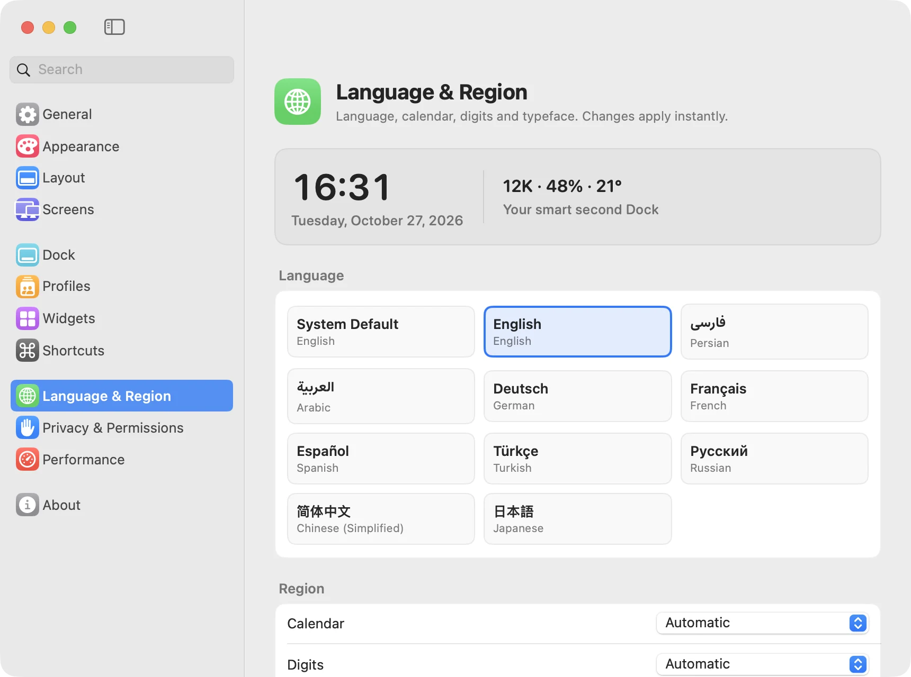

A second Dock, alive with widgets.
NiceDock sits beside the macOS Dock and brings 111 native widgets — weather, calendar, markets, system stats, timers, todos and more — into one glassy strip. Built in Swift, light on memory, fluent in ten languages.
Everything at a glance
Clocks and focus timers, calendars and reminders, live weather, stocks and crypto, CPU, memory and battery, quick toggles, files and media — plus connected services like Stripe, GitHub, Plausible and your AI usage.
Made for your Mac
Native SwiftUI and AppKit, designed to feel like part of macOS.
Seven layouts
Swap places with the macOS Dock at the bottom edge, reveal on hover, pin to any corner, replace the Dock entirely or float anywhere.
Profiles
Up to eight docks for work, home or focus. Swipe between them or press ⌃⌥⌘ 0–7.
Local-first and private
No account, no telemetry. Tokens for connected widgets stay in your Keychain, and a permission is asked for only when a widget needs it.
Light and fast
Services run only while a visible widget needs them, and a hidden dock unmounts its widgets. About 27 MB of memory and a fraction of a percent of one core at rest.
Ready for AI assistants
Claude, Codex, Cursor and other MCP clients can read and arrange your dock, and paint wallpapers by mood or weather. Read-only until you allow changes.
A complete Settings window
Twelve panes: appearance with a live preview, six dock styles including Liquid Glass, layouts, screens, shortcuts, permissions and performance.
Speaks your language
Switch languages instantly, without relaunching. Persian and Arabic turn the whole interface right-to-left, with the Estedad typeface, the Solar Hijri calendar and native digits.

Install in a minute
Free download. macOS 14 Sonoma or later on Apple silicon.
Download
Open NiceDock.dmg and drag NiceDock into Applications.
Allow it once
NiceDock isn't notarized by Apple yet, so macOS stops the first launch. Open System Settings › Privacy & Security and click Open Anyway.
Make it yours
Pick a layout, then right-click the dock › Widgets… to add, customize and reorder widgets.
Prefer the Terminal? After moving it to Applications:xattr -dr com.apple.quarantine /Applications/NiceDock.app